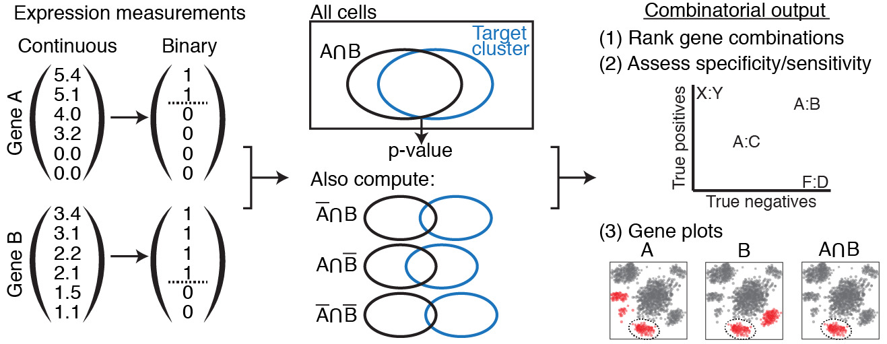

Details of operation¶
COMET iterates sequentially through all user-specified clusters, generating statistics/visuals for one at a time.
Per-cluster program flow
- 1. Read in data from TXT.
- 2. Run XL-mHG tests on singletons.
- 3. ‘Slide’ XL-mHG cutoff values.
- 4. Generate discrete expression matrix using cutoffs.
- 5. Find cluster and population pair expression counts.
- 6. Run hypergeometric test on pairs using counts.
- 7. Calculate true positive/negative.
- 8. Export statistical results.
- 9. Generate and export visualizations.

A simplified version of the program flow.
First, continuous expression values are converted to discrete via the XL-mHG test. Then, genes are combined and their combinations tests via the hypergeometric test. Finally, these combinations are ranked, assessed, and plotted.
1. Read in data from TXT.¶
User-specified data is read in via TXT format (currently, requiring tab delimiters.) See Usage for details of the format of this data.
There are three components:
- Per-cell gene expression values. Each gene must be normalized over cells.
- Cluster membership by cell.
- Per-cell 2-D visualization coordinates, for plotting.
In order to test ‘complement’ genes (i.e. expressed as the absence of a gene rather than the presence of a gene), COMET creates a new complement gene for each gene. These complement genes are treated exactly the same as normal genes, but their expression values are the negative of the expression values of their analogous gene. This allows COMET to find separate mHG cutoff values for genes and their complements.
2. Run XL-mHG tests on singletons.¶
COMET receives as input a gene expression matrix including n cells (sample size) and p genes, as well as a cluster label for each cell. The tool will then proceed to testing, for each cluster C and gene G, whether gene G is a favorable marker candidate for cluster C. A measure of significance will be computed for gene G’s potential as a marker, as well as other informative statistics (such as True Positive and True Negative rates).
COMET will start by pooling all cells that are not in cluster C into a bigger cluster C0. The procedure then relies on the XL-minimal Hypergeometric test (XL-mHG test) to assess whether a gene is a favorable marker for cluster C with respect to cluster C0. In the following paragraphs, we briefly describe the minima Hypergeometric test (mHG test) and the XL-Hypergeometric test. We refer the reader to Wagner(2017) fo more details on these statistical tests.
The mHG test is a rank-based nonparametric test used to determine gene set enrichment. Cell labels (“1” if the cell belongs to cluster C, and “0” if the cells belongs to cluster C0) are sorted based on absolute gene expression values, resulting in a binary list of cluster labels v. For each given cutoff index i, a Hypergeometric test (HG test) is performed in order to determine enrichment in cluster C cells above the cutoff i. The corresponding HG p-value is computed. The mHG test will then record which cutoff achieved the lowest HG p-value, i.e. the cutoff that achieved the best C cells enrichment in the upper part of the list v. This lowest p-value is the mHG test statistic. A p-value for the mHG test is then computed efficiently using a Dynamic Programming approach.
The XL-mHG test incorporates a slight variation to the mHG test, by including two additional parameters, X and L. L is an upper bound on the cutoff index i (where i=0 represents the top of the list), while X is a percentage value indicating the minimal number of cluster C cells the user wants to capture above the chosen cutoff. Once an optimal cutoff index i* for gene G has been found using the mHG test, the original gene expression vector can be binarized. We consider that G is expressed (value of 1) in all cells above the cutoff i*, and that G is not expressed (value of 0) in all cells below the cutoff. In a sense, X and L can be viewed as parameters controlling the False Positive and False Negative rates. X is precisely a lower bound on the True Positive rate, while L may be tuned to minimize the number of False positives.
Common marker detection practice in single-cell transcriptomics is to compare the cell populations in cluster C and cluster C0 using statistical tests such as the unequal variance t-test (Welch test), the Wilcoxon rank-sum test, the Kolmogorov-Smirnov test, as well as more sophisticated models (zero-inflated Negative Binomial models, hurdle models). COMET will also output the t-test statistic and p-values, but will not use these values for purposes other than informing the user.
3. ‘Slide’ XL-mHG cutoff values.¶
It may happen that the cutoff index lands at a position in the list where all cells have the same gene expression value. Since we cannot distinguish between cells having the same gene expression value, COMET needs to convert this cutoff index into an absolute cutoff value t in terms of gene expression (usually expressed in CPM, TPM, or log-transformed TPM). It accomplishes this by ‘sliding up’ the cutoff index in the sorted list of cells until the index encounters a cell with a different gene expression value.
For example, gene expression data often contains many cells that do not express the gene of interest at all. These cells have a gene expression value of 0. In the case that the XL-mHG cutoff index lands on a cell with 0 expression, COMET will ‘slide’ up the cutoff index in the sorted list of cells until it finds a cell with non-zero expression. In other words, COMET will choose a cutoff value between 0 and the lowest non-zero expression value, sliding ‘upwards’ towards higher values. This results in a non-expression (binarized gene expression value of 0) and expression group (binarized gene expression value of 0), where non-expression is exclusively 0-expression.
COMET will always slide ‘upwards’. In the above case of 0-expression, sliding ‘downwards’ and choosing a cutoff below 0 would create an non-expression group of 0 members; no cell expresses below 0! The exception is if COMET reaches the ‘top’ of the list: if it chooses a cutoff value above any cell, the expression group will have zero members. In this case, COMET will turn around and slide ‘downwards’ until it finds a suitable cutoff value. ‘Complement’ genes are treated in the same way, even though their expression values are negative.
4. Generate discrete expression matrix using cutoffs.¶
Now that COMET has generated absolute cutoff values for each gene, it converts the gene expression matrix (rows are genes, columns are cells) of continuous gene expression to one of discrete gene expression: where expression for each individual gene G is represented as a ‘1’ for cells that have expression levels above the XL-mHG absolute cutoff value for G, and as a ‘0’ for cells whose G’s expression level is below the XL-mHG absolute cutoff. Binarizing gene expression data is useful to compute statistics such as True Positive and True Negative rates for each gene and each cluster. It also facilitates handling gene combinations.
5. Find cluster and population pair expression counts.¶
Once binarized gene expression values have been obtained for each single gene relative to each cluster of interest, one can leverage these results to obtain similar binarized expression values for combinations of genes. For clarity purposes, we specialize this paragraph for combinations of two genes, but this extends beyond this simple case to combinations of any number of genes, or/and their complements. If v1 (resp. v2) represents the binarized gene expression vector for gene A (resp. B), the binarized gene expression vector for the combination (A AND B) will be the vector v1*v2. where * denotes the element-wise product.
Gene combinations are then ranked using the p-values of a Hypergeometric test looking at the number of cells in cluster C that have a binarized (A AND B) expression value of 1. The parameters of the hypergeometric test are as follows: - Number of cells in cluster C expressing the combination (A AND B); - Number of cells in cluster C; - Number of cells expressing the combination (A AND B); - Total number of cells. These parameters are usually referred to as k, s, M, and N, respectively.
As a note, by default COMET will not consider any single genes with a True-Positive value of less then 15% in any multiple gene marker panels since the True-Positive rate can only decrease with the addition of genes to a marker panel. This also decreases the size of matrix multiplications.
Finding the parameters for gene pairs¶
For gene pairs, True Positive and True Negative rates can be computed efficiently using matrix multiplication. To understand this better, let’s take the case of a combination of two genes (A AND B). Let u1 be the vector whose i-th entry is 1 if cell i is a True Positive for gene A (i.e. if cell i belongs to cluster C and expresses gene A), and 0 otherwise. Define u2 similarly for gene B. Then the inner product of u1 with u2 will provide to the number of True Positives for (A AND B), i.e. the number of cells expressing (A AND B) that belong to cluster C. Dividing this inner product by the number of cells in cluster C will yield the True Positive rate. Organizing the True Positive vectors into a gene x cell matrix M, it follows that computing the True Positive rate for gene pairs boils down to matrix multiplication of M with its transpose. The result of this operation is a gene x gene matrix TP, where the (i,j)-th entry TP(i,j) is precisely the True Positive rate corresponding to the combination of gene Gi and gene Gj. This similarly applies to computing True Negative rates.
In this way, COMET finds the k and M parameters for the hypergeometric test mentioned above, which is used to rank gene combinations in the final output. The s and N parameters are easily found by counting cluster members.
3+ gene combinations¶
Combinations of 3-4 genes are currently implemented and turned on using the -K option. For each given combination of genes (A AND B AND C), COMET will compute a True Positive rate, True Negative rate as well as a Hypergeometric significance measure, as mentioned above. These computations leverage matrix multiplication. Due to the current computational expense, it can be run in full (if a cluster is available) or on lesser hardware with an abbreviated search space by turning on the heuristics. The main bottleneck is matrix multiplication on computers with smaller memory loads.
For the 3-gene combinations , we construct an ~N^2 x Cells matrix containing 2-gene combinations (A AND B), then multiply by another N x Cells matrix containing gene C. This gives us an expression count matrix for the 3 gene combinations (large) and is then trimmed down to discard gene combinations such as AAA and AAB where there are gene repeats.
6. Run hypergeometric test on pairs using counts.¶
Ranking single genes and gene combinations according to their potential as markers for a given clusters requires defining a unified metric to compare the performance of these different marker candidates. Because each gene combination (where a singleton is considered to be a combination of a single gene) has its own binarized expression vector (where the combinations is said to be expressed for values of 1, and not expressed for values of 0), we can use this expression vector to perform a Hypergeometric test looking at the number of cells in cluster C that have a binarized expression value of 1. This test will produce a p-value, which is then used to rank all different combinations. Intuitively, a lower p-value suggests that the corresponding gene combination is a better candidate marker panel.
7. Calculate true positive/negative.¶
Once COMET has ranked all gene combinations using the corresponding hypergeometric p-value, it reports True Positive and True Negative rates associated with each gene combination, using the matrix products found earlier. As a reminder, True Positive rate is found by dividing the number of expressing cells in the cluster by the total cell count of the cluster; true negative is found by dividing the number of non-expressing cells outside the cluster by the total cell count outside the cluster.
8. Export statistical results.¶
COMET’s statistical results are exported to multiple CSV files per cluster: some including statistical values for exclusively singletons, and some including combinations. Rows are genes or gene combinations, columns are values associated with that gene/combination.
The columns of the statistical data are:
gene: the name of the gene.HG_stat: the hypergeometric test statistic. Genes are ranked using this value.mHG_pval: the statistical significance of the cutoff which the XL-mHG test has chosen.mHG_cutoff_index: the index which the XL-mHG has chosen, after sliding.mHG_cutoff_value: the gene expression cutoff value corresponding to the chosen index.t_stat: the t-test statistic.t_pval: the t-test p significance value corresponding to the test statistic.TP: the true positive rate.TN: the true negative rate.FoldChange: the log base 2 fold change of a single gene from the cluster of interest compared to the rest of the cells.init rank: sequential ranking based onHG_stat, where lowerHG_statis better ranking. No two genes are ranked the same; those with identical hypergeometric statistic values are ranked arbitrarily relative to one another.CCS: Cluster Clear Score. This gives us a statistic for the clearing out of other clusters with the addition of the second gene in comparison with the single gene case. The ‘lead gene’ is whichever of the pair has the smallest p-value, then we compute weighted True Negative deltas across the other clusters for the lead gene and the pair. This is only computed for a certain number of the top performing ‘init rank’ gene combinations.rank: Final rank. Takes the average of the the init rank and the CCS to determine which gene combinations are the best performing in both tests.Plot: Determines whether a gene is plotted (1) or not (0). The purpose is to only graph the top ten of a given gene appearance to avoid very well performing genes from taking over the entire results page.geneis replaced bygene_1andgene_2(combinations of 3+ genes are unimplemented as of yet).mHG_pval,mHG_cutoff_index,mHG_cutoff_value,t_stat, andt_pvalare omitted, since they are irrelevant to non-singletons.
9. Generate and export visualizations.¶
For each cluster, COMET generates several PNG file folders containing visualizations of the statistical results. Each folder’s name is prefixed by the cluster name, and includes visuals for only the first few highest ranked genes/combinations. The data files are described in the Output section.
The folders are:
(cluster)_pairs_as_singletons: compares discrete expression and continuous expression for each gene in a combination on a t-SNE plot.(cluster)_discrete_pairs: compares discrete expression of a gene combination with that of its components.(cluster)_pair_TP_TN: plots true positive/negative rates of each gene.(cluster)_singleton: same as thecombinedplot, but includes only singletons.(cluster)_singleton_TP_TN: same as theTP_TNplot, but includes only singletons.(cluster)_discrete_trios: compares discrete expression of a gene combination with that of its components, but there are three.